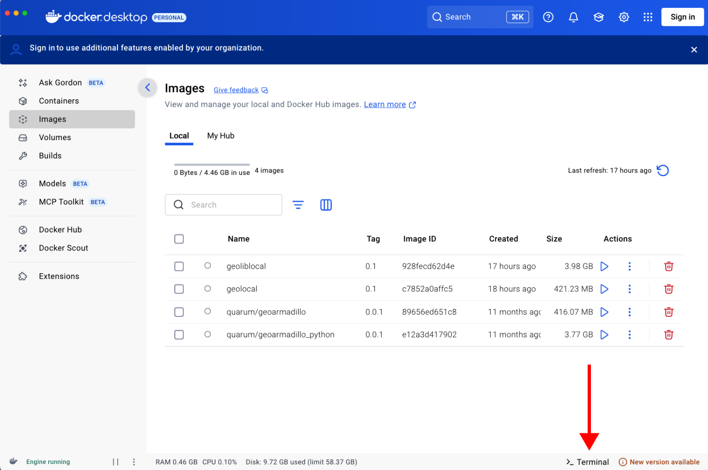
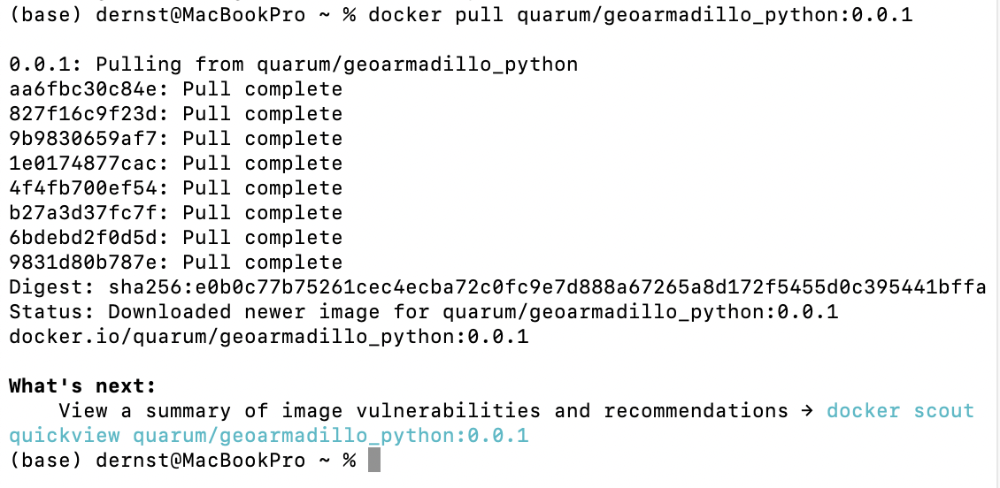
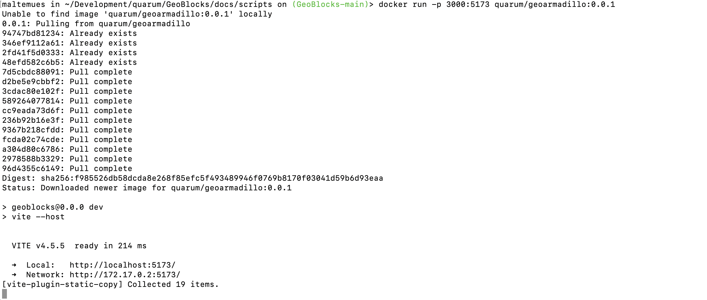
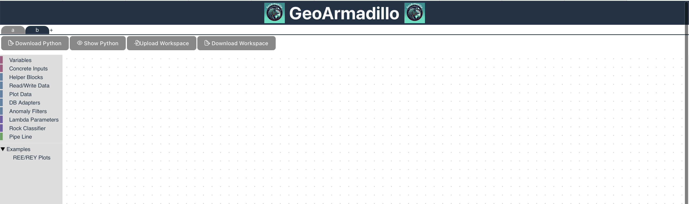
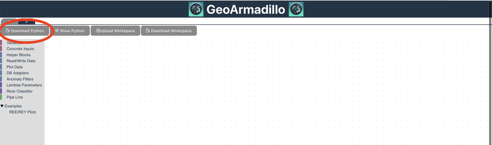
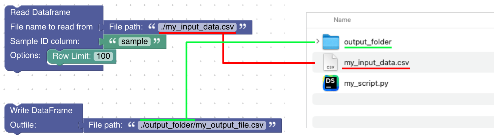

Getting Started
We provide the GeoArmadillo and the Pyhton environment to execute generated Python code currently in two Docker images at the official Docker hub.
The GeoArmadillo image allows to run a container that serves a web server hosting the GeoArmadillo tool and language. The GeoArmadillo Python image allows to run the Python script generated inside the container. We will explain here shortly, how to run them.
Note
Docker is a way to pack our software together with everything it needs to run, into something called a “container.” This means it will work the same no matter where you use it on your computer, a server, or in the cloud.
Advantage for you: Because we provide our software in a Docker container, you don’t have to worry about installing extra tools or fixing setup problems. You can start using it right away, without technical hassle.
1. Installing Docker Desktop and Image Download
You have to install Docker Desktop. It can be downloaded for Windows, macOS and Linux free of charge from the Docker webpage at: https://www.docker.com/
Afterwards, the two GeoArmadillo images have to be downloaded via the two shell commands given below. A shell command can be executed in a shell like PowerShell (on Windows) and Terminal (macOS and Linux). You can also use the Terminal that is implemented in the Docker Desktop application. You find it at the lower right bottom of the window.
{kind=link}

Open your shell, copy & paste the following command into the shell and confirm by pressing enter.
docker pull quarum/geoarmadillo:0.0.2
This command will download the first image. After the download is completed you can download the second image via:
docker pull quarum/geoarmadillo_python:0.0.2
A successfull image download looks like this:
{kind=link}

Note
The geoarmadillo_python image is rather large (>2 GB), therefore, the download might take a few minutes. The images only have to be downloaded once. They are stored on your local device. You can find and manage them via the Docker Desktop software.
2. The GeoArmadillo Container
To start the container that runs GeoArmadillo, you first have to launch Docker Desktop, unless it is already running. After Docker Desktop launched, it can be minimised and will run in the background.
Afterwards, you have to run the GeoArmadillo image via the command below. Open your local shell, copy & paste the command and confirm by pressing enter.
docker run -p 3000:5173 quarum/geoarmadillo:0.0.2
If the container started successfully, you should see an output in your shell similiar to the screenshot below. While working with GeoArmadillo, do not close the shell, but you can minimise it. Once you are done with your work, you can close the shell.

Now, open your favourite browser (Firefox, Chrome, Edge…) and navigate to localhost:3000 in the address line.
http://localhost:3000
The GeoArmadillo tool should open up and you can start building your data processing pipeline as described in GeoArmadillo Pipelines.

Note
The container runs a webserver on port 5137 and it has to be mapped to a different port on your local machine to get access via your host browser. Docker allows to specify a port using the -p flag. In the command above, we use the -p flag to bin the port 5137 of the container to 3000 on localhost.
Warning
We provided an image for arm64 (Apple Silicon, Snapdragon, etc.) and amd64 (Any modern Intel or AMD CPU). If you have any other CPU please try the –platform linux/amd64 flag.
docker run -p 3000:5173 -platform linux/amd64 quarum/geoarmadillo:0.0.2
3. The GeoArmadillo Python Container
Once your pipeline is completed, click on the Download Python button in the upper left corner. This will translate your GeoArmadillo data processing pipeline into an executable Python script.

A download window opens and you are asked to give the location and name where the generated Python script should be saved. To run the Python computation in the GeoArmadillo Python Container, the downloaded Python script and the input data should be stored in the same location. Give the script a meaningful name so that you remember what it does.
Warning
Define relative paths for input and output files in your data processing pipeline. Make sure that the generated Python script is stored accordingly.

Afterwards, the generated and downloaded Python script should be executed. This is done within the GeoArmadillo Python Container. Open a new window or tab in your shell. Then, navigate to the folder in which the Python script and input data are stored (as described above). To navigate through folders within the shell you can use the cd command.
Navigating in PowerShell: Managing current locationNavigating in Terminal: File & Directory Commands
The Python script is executed by the command below. Again, copy & paste the command to your shell and confirm by pressing enter. Replace “your_script_name.py” by the name of your Python script.
docker run --rm -v .:/experiments quarum/geoarmadillo_python:0.0.2 ./your_script_name.py
Once the computations are done, you will receive your output in the defined output folder(s).
Note
The goal is to mount the current folder in the /experiments folder in the docker image. This is achieved via the -v .:/experiments flag in the command above.
After successfull execution of the command, your data and scripts are available in the docker container and the Python script is executed. As any file writen to the /experiments folder is also persisted to your current directory, the results are available on your host system after execution. The –rm flag ensures that the container gets removed after execution. While this is not strictly necessary, it saves ressources on your system. In case of debugging, the container should be run without the –rm flag.